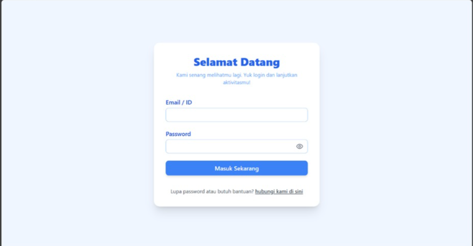
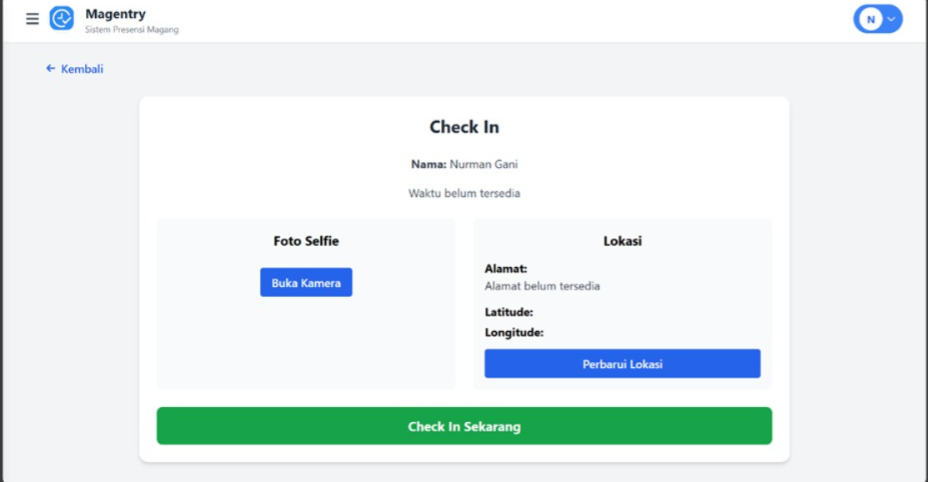
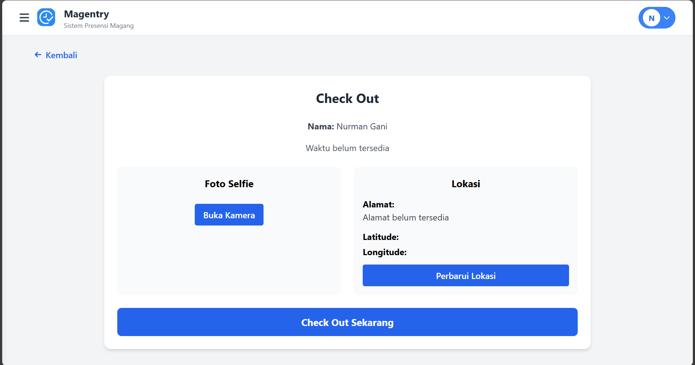
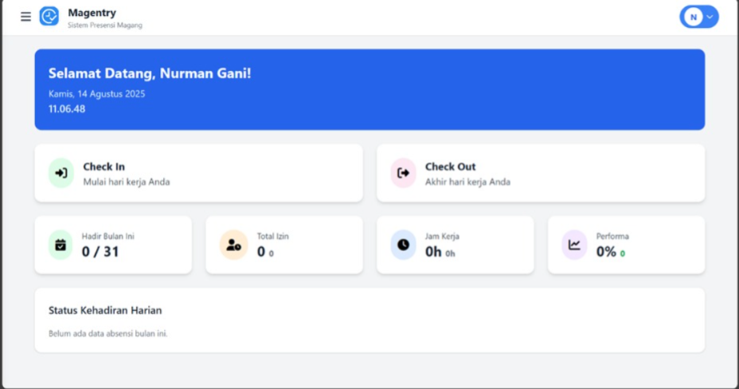
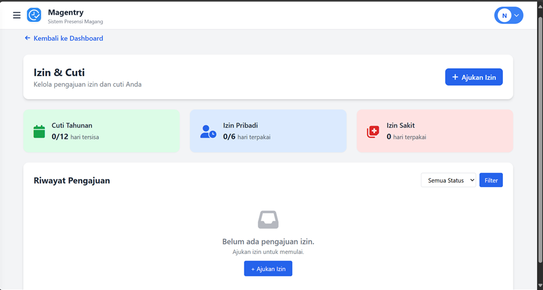

WEB DEVELOPMENT
Magentry
Sistem presensi digital untuk peserta magang yang menggantikan proses foto WhatsApp dan tanda tangan manual.
Proyek ini dikembangkan untuk mendukung kebutuhan operasional internal organisasi.

PROJECT OVERVIEW
Alur presensi yang lebih terstruktur.
Tampilan utama dari sistem yang dikembangkan.

Halaman login
Akses untuk admin dan peserta magang.

Check-in
Pencatatan kehadiran dengan bukti foto.

Check-out
Alur pulang yang mudah dan terdokumentasi.

Dashboard admin
Monitoring status kehadiran secara terpusat.

Pengajuan izin
Pengelolaan izin dan riwayat pengajuan.
THE CHALLENGE
Proses presensi manual membuat pencatatan mudah terlambat, berulang, dan sulit direkap oleh SDM.
MY CONTRIBUTION
Menganalisis kebutuhan, merancang alur presensi dan wireframe, serta membangun sistem presensi terintegrasi dengan pendekatan Waterfall.